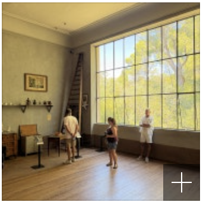

- 핑크파르페
- 23시간전
블라블라-프랑스 세잔의 도시 엑상프로방스여행기(세잔 아뜰리에) / 소화,붓기, 형당을 한 번에 해결하는 베리요거트 & 바나나킥맛<푸푸엔자임>미리...
오늘은 아비뇽에서 엑상프로방스로 갑니다 아비뇽에서 기차를 타고 20부만 가면 엑상 프로방스에 갈 수 있어요 남프랑스는 뚜벅이로 다니기는 어려운데 아비뇰과 액상프로방스는 렌트안해도 기차여행으로도 충분히 가능해요(기차역에서 시내까지는 우버로 해결) 우버를타고 기차역으로 가서 출발-엑상프로방스...

- 공감 83
- 댓글 14